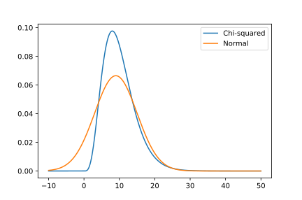
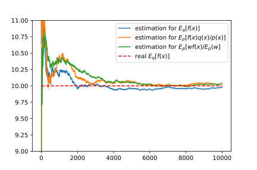

Stochastic optimization I: from Monte-Carlo methods to Gibbs sampling
| Date: | Feb 15, 2019 |
|---|---|
| Last Updated: | Feb 20, 2019 |
| Categories: | |
| Tags: |

Contents
Introduction
This is a series of inspection on stochastic methods. Traditionally, an optimization problem could be solved by gradient descent methods, greedy algorithm and stochastic methods. For example, Levenberg–Marquardt algorithm is a gradient descent based methods. Another example is OMP which is used to find a local minimum of L0 penalized problem. Since the L0 norm is totally indifferentiable, we could not calculate its gradient. Therefore, such kind of problem is generally more difficult than those differentiable problems. However, in this series, we would only talk about the stochastic methods. When applying this method to solve optimization, we usually need to construct a probability which shows how possible the solution lies in a specific location.
In this series, we would starter from a beginner’s view on stochastic optimization, and end on some state-of-art researches. A person who read this article may need to have fundamental experiences on such issues:
Gradient based optimization.
Probability theory on elementary level.
Stochastic process on elementary level.
Note that in many cases, a method should not be classified into a particular category, because it may integrate some different ideas from different ares. For example, to solve a Bayesian analysis problem, we could apply the gradient descent method on the likelihood function instead of using random search. Generally, if you know more about optimization, you may have a stronger basis for learning stochastic methods. Actually, many newest topics including deep learning, entropy analysis and uncertainly quantification are related to stochastic methods. In this series, we may talk about those topics.
Certainly, in this topic, we would have some learning materials including lecture notes, slices, blogs and papers. To understand some concepts better, we may provide some codes. In the following notes, we are mainly focus on some concepts that are not explained well in our reading materials. Some topics mentioned in those materials but not very important would be ignored.
This topic
In this topic, we would discuss Monte-Carlo method, Metropolis-Hastings algorithm and Gibbs sampling. The learning materials could be found here:
Monte-Carlo method
What is Monte-Carlo method
Check here to see Monte Carlo method in Wikipedia.
Monte-Carlo method is a general experiment for estimating a integration. For example, for any function $f(x)$, we could calculate the integration by
where $x_i \sim U(a,b)$, which means if we generate a lot of samples that follow the uniform distribution, then we could estimate the integration statistically. Since $f(\cdot)$ is an arbitrary function, we know that a uniform sampling could be used to estimate arbitrary integration. This idea is easy to be extended to the case of vector calculation.
Furthermore, to get a more general form, we could rewrite $\eqref{fml:mc:intro}$ as
where $x_i \sim p(\cdot)$. $p(\cdot)$ is an arbitrary distribution, which means we could use an arbitrary distribution to generate a lot of samples, and use those samples to estimate an arbitrary integration.
| An example of estimating $\pi / 4$ | An example of Buffon’s needle test |
|---|---|
 |
Check here to see Buffon's needle problem in Wikipedia.
Here are two examples for estimating $pi$ by Monte-Carlo method. In the first example, we count the points that satisfy $\lVert (x,y) \rVert_2 < 1$ and use the ratio of these points to estimate $\frac{\pi}{4}$. In the second example, we throw needles randomly and count the ratio of needles that lie across the parallel lines. The ratio could be used to estimate $\pi$. In both of these examples, we do not calculate any integration, and we do not need to measure any area. However, we could use a lot of experiments to approximate the unknown integration, $\pi$.
Unbiased estimator and error analysis
Check here to see Bias of an estimator in Wikipedia.
Unbiased estimator for the expectation
Remark that $\eqref{fml:mc:general}$ is called “Expectation over distribution $p(\cdot)$“. Note that if we denote that
where $\mu$ is the expectation and $\overline{f(x)}$ is the estimator for $\mu$. Because for any $i$, we have $\mathbb{E}_p[f(x_i)] = \mu$, we have
So $\overline{f(x)}$ is the unbiased estimator for the expectation $\mu$. Note that although $\overline{f(x)}$ is a random variable with an average of $\mu$, it is not equivalent to the real expectation. However, this derivation shows that why we could use the average of stochastic samples to replace the original integration in $\eqref{fml:mc:general}$.
Unbiased estimator for the variance
Consider the standard deviation $\sigma$, we know that $\sigma:=\sqrt{\mathbb{D}(\cdot)}$, where $\mathbb{D}$ is the variance. Then if we have a distribution $p(\cdot)$, we would have
First, we have already known that for any function $f$, $\mathbb{D}_p[f(x)] = \mathbb{E}_p \left[ f^2(x) \right] - \mathbb{E}^2_p \left[ f(x) \right]$. Because for any $i \neq j$, $\mathbb{E}_p \left[ f^2(x_i) \right] = \mathbb{E}_p \left[ f^2(x) \right]$ and $\mathbb{E}_p \left[ f(x_i)f(x_j) \right] = \mathbb{E}^2_p \left[ f(x) \right]$, we could derive that
Hence $s^2$ is an unbiased estimator for the real variance $\sigma^2$, because the expectation of $s^2$ is exactly $\sigma^2$.
Check here to see Unbiased sample standard deviation in Wikipedia.
A following question is: “is $s$ also the unbiased estimator for $\sigma$?” Centainly not. Assume that we have already known $\mathbb{E}(x^2) = a$, generally $\mathbb{E}(x) \neq \sqrt{a}$, unless $x$ is a constant. In fact $s$ is not a constant, so $s$ is not the unbiased estimator for $\sigma$.
The second question is: “Is it possible for us to calculate the definite value of the unbiased estimator for the standard deviation?” In some cases we could do that. Since this technique requires us to use Taylor expansion for $\sqrt{\cdot}$, it is very difficult for most cases. The reference from Wikipedia here gives some examples of the unbiased estimator for standard deviation, but here we would not discuss about this topic further.
Unbiased estimator for the error of expectation
Check here to see Standard error in Wikipedia.
Now we would introduce a new concept: standard error. It is important to know that STANDARD ERROR is quite different from STANDARD DEVIATION. A deviation is determined by the specific distribution $p(\cdot)$ and the function $f(\cdot)$. Once we determine $p(\cdot),~f(\cdot)$, the $\sigma$ would be a constant value. Although we could use the unbiased estimator $s^2$ to estimate $\sigma^2$, even we generate infinite samples, the estimated variance would only converge to $\sigma^2$ (not 0). However, the standard error means how much the variance of the estimated expectation is.
Recall that we use $\overline{f(x)} := \frac{1}{N} \sum_{i=1}^N f(x_i)$ to make an unbiased estimation, and we know that such an estimator would converge to the true expectation exactly, i.e. $\mathbb{E}_p\left[\overline{f(x)}\right] = \mu$ (proved in $\eqref{fml:mc:unb-exp}$). But we know that $\overline{f(x)}$ is also a random variable, so it would has the variance (deviation). Hence we denote the standard deviation of the estimator for the expectation as the standard error, i.e.
According to the definition of the variance in $\eqref{fml:mc:def-var}$, for any $i$, we have $\mathbb{E}_p \left[ \left( f(x_i) - \mu \right)^2 \right] = \sigma^2$, where $x_i \sim p(\cdot)$. Then we have
In the above derivation, $\varepsilon^2 = \frac{1}{N} \sigma^2$ discloses that standard error which is a constant is exactly $\frac{\sigma}{\sqrt{N}}$, where the standard deviation is also a constant. Hence, if $\mathbb{E}_p \left[ s^2 \right] = \sigma^2$ shows that $s^2$ is the unbiased estimator for the variance $\sigma^2$, then we know the unbiased estimator for $\varepsilon^2$ is
It is easy to know that
To be emphasized, $\mathrm{SE}^2$ is an unbiased estimator for $\varepsilon^2$, however, $\mathrm{SE}$ is not the unbiased estimator for $\varepsilon$. Because we are borrowing the derivation of the estimator for the variance. Certainly, if we could calculate the unbiased estimator for $\sigma$ (although it is difficult to find such an estimator), then it is easy to learn that the unbiased estimator for $\varepsilon$ is $\frac{1}{\sqrt{N}}$ of the estimator for $\sigma$.
Importance sampling
Defining a set (area) that $\mathcal{Q} = \{ x | q(x) > 0 \}$, we know it has a subset $\mathcal{X} = \{ x | f(x)q(x) \neq 0 \}$. Consider another set $\mathcal{P} = \{ x | p(x) > 0 \}$, then we know that $\mathcal{P}$ and $\mathcal{Q}$ are the domains of two different distributions $p(\cdot),~q(\cdot)$ respectively. As long as we ensure that $\mathcal{X} \in \mathcal{P}$, we could calculate the expectation $\mathbb{E}_q [f(x)]$ by
| General case | Simplified case |
|---|---|
The above two figures show the relationship among three domains. In the left figure, we show a general case, where $\mathcal{P} \neq \mathcal{Q}$. In some cases, when $q(x) > 0$, $p(x) = 0$, but we have $f(x)=0$ in such cases. So we could use a distribution like $p(\cdot)$ with a domain $\mathcal{P}$ to calculate the expectation.
Such a relationship is not convenient in many cases. To simplify it, we could construct a distribution $p(\cdot)$ which domain satisfies $\mathcal{Q} \subseteq \mathcal{P}$. This case is shown in the right figure.
The technique where we use $\mathbb{E}_p \left[f(x)\frac{q(x)}{p(x)}\right]$ to calculate $\mathbb{E}_q [f(x)]$ is called “importance sampling” which means we use a distribution to calculate Monte-Carlo integration over another distribution.
Unbiased estimator for importance sampling
Since $\mathbb{E}_p \left[f(x)\frac{q(x)}{p(x)}\right] = \mathbb{E}_q [f(x)]$, if we denote $w_i = \frac{q(x_i)}{p(x_i)}$, we could define such unbiased estimators
where $x_i \sim p(\cdot)$.
If we set $f^{\dagger}(x_i) := w_i f(x_i)$, we would know that the three estimators could be proved to be unbiased by the totally same methods discussed before. These three estimators are for expectation, variance and squared standard error respectively.
To be specific, we have known that $\mathbb{E}_p \left[f(x)\frac{q(x)}{p(x)}\right] = \mathbb{E}_q [f(x)]$, which means $\mathbb{E}_p \left[ \overline{wf(x)} \right] = \mathbb{E}_q [f(x)] = \mu_q$. So the unbiased estimator for the expectation is exactly the real expectation over the $q(\cdot)$.
However, If we consider the unbiased estimator for the variance, we would find that
Consider the real variance $\sigma^2_q = \mathbb{E}_q \left[ f^2(x) \right] - \mu^2_q$, we would find that the bias of the proposed variance is
Hence we know that the unbiased estimator for the “variance” here is not the unbiased estimator for the true variance of $f(\cdot)$ over $q(\cdot)$. Certainly, it is really an unbiased estimator, but it converges to another variance.
Since $\exists~C,~\forall~x, \frac{q(x)}{p(x)} < C$, we know that $\widehat{\sigma_q^2}$ would not be extremely larger than $\sigma_q^2$ if we choose a good density function $p(\cdot)$ that is close to $q(\cdot)$. In particular, when $p(\cdot) = q(\cdot)$, $\widehat{\sigma_q^2} = \sigma_q^2$.
There is the similar circumstance for the estimator for standard error, because the $\widehat{\varepsilon^2_q} = \frac{1}{N} \widehat{\sigma_q^2}$.
The above derivations shows that when using importance sampling to calculate the Monte-Carlo integration, we could still preserve the expectation for another probability. However, compared to generating samples over the original probability directly, this method may introduce a different variance (almost always larger). The above unbiased estimators could estimate the variance and standard error correctly, but both of the variance and standard error are different from those of the direct sampling method.
Alternative: self-normalized importance sampling
Check here to see Importance sampling in Wikipedia.
We have already known that $\overline{wf(x)}$ is an unbiased estimator for $\mathbb{E}_q [f(x)]$. Let $f(x) = 1$, then we could define an unbiased estimator
where $\mathbb{E}_p (\overline{w}) = 1$.
Since
We could derive an estimator that
According to $\mathbb{E}\left[ \frac{a}{b} \right] = \frac{\mathbb{E}[a]}{\mathbb{E}[b]} - \frac{\mathrm{Cov}\left( b,~\frac{a}{b} \right)}{\mathbb{E}[b]}$, we have
Hence we know that $\widetilde{wf(x)}$ is not the unbiased estimator of $\mu_q$. Although in some materials, we may derive that if $N \rightarrow \infty$, $\lim\limits_{N \rightarrow \infty} \widetilde{wf(x)} = \mu_q$, this conclusion could not ensure an unbiased estimation. In some materials, such kind of estimator is described as “asymptotically unbiased”.
To be frank, almost all materials about self-normalized importance sampling do not mention the estimator for variance ($\widetilde{s^2}$), thus we do not talk about it here. First, for any $x_i$, we have
Consider the definition of the standard error, we would have
In this derivation, we make 2 approximations. In the first approximation, we apply $\mathbb{E} \left[\frac{a}{b}\right] = \frac{ \mathbb{E}[a] }{ \mathbb{E}[b] }$, which causes the error brought from the covariance removed. In the second approximation, we know that $\mathbb{E}_p [w] = 1$ while $\frac{1}{N} \mathbb{D}_p [ w ] < \frac{1}{N}$, which means we remove the variance in the dominator. Hence we could only get an approximation of the squared standard error $\widetilde{\varepsilon^2}$ here. If we apply another approximation that $\widetilde{wf(x)} \approx \mu_q$, we could get an estimator
Apparently this is not an unbiased estimator for both $\widetilde{\varepsilon^2}$ and $\varepsilon^2$. If we substitute that $w_i = 1$, we would find that $\widetilde{\mathrm{SE}^2} = \frac{ \sum_{i=1}^N \left(f(x_i) - \overline{f(x)} \right)^2 }{ N^2 }$, which is different from the unbiased estimator that we have derived in $\eqref{fml:mc:unb-se}$.
Simulation results
To show that why the unbiased estimator is so important and how importance sampling works, we write codes to perform Monte-Carlo simulation.
Let $p(\cdot) \sim \mathcal{N}(\mu_n,~\sigma_n)$, $q(\cdot) \sim \chi^2 (k)$. Then we could use different parameters to test different estimators.
For expectation, we test the estimators for direct sampling, importance sampling (where we use $\frac{q(x)}{p(x)}$) and self-normalized importance sampling.
For variance, we compare the estimators for direct sampling and importance sampling. Both estimators are unbiased, however, they are for different variance value.
For standard error, we compare the estimators for 3 methods. Note that the last estimator, i.e. the estimator in self-normalized importance sampling is biased.
For all experiments, we set $k=10$. Then here are the results:
| $(\mu_n,~\sigma_n)$ | Expectation | Variance | Standard error | |
|---|---|---|---|---|
| (20, 10) | ||||
| (9, 6) |  |  | ||
| (20, 3) |  |
We use dashed red line to show the true value calculated by integration. The blue curves, orange curves and green curves are Monte-Carlo simulation results by direct sampling, by importance sampling and self-normalized importance sampling respectively. Generally we could find that the standard error estimator in self-normalized importance sampling converges to 0 more slowly, because it is not only a biased estimator, but also an estimator for an approximate standard error.
The blue density function is $\chi^2(10)$. Then we know that
In the first experiment, we use a widely spread normal distribution which is not close to the target distribution to perform importance sampling. We could find that the convergence of the expectation is fairly good, while it has an obviously larger variance and standard error compared to direct sampling.
In the second experiment, we adjust the parameters of the normal distribution so that it is closer to the target distribution. The results are even better than the first experiment. Consider that the maximum of the probability density function of the target distribution is about 1.5 times of that of the normal distribution. And we find that the variance of the importance sampling is almost also 1.5 times than the original variance, which proves our theory.
In the last experiment, we use a bad distribution to sampling the target distribution. The distribution is bad because there is a small probability when we get a sample that appears in the target distribution with a high possibility. There is no surprise that the simulation of the importance sampling is in very low quality with an extremely high variance and nearly unconverged standard error.
Metropolis-Hastings algorithm
Check here to see Inverse transform sampling in Wikipedia.
In the above parts, we are keeping discussing about the single value function with a single value distribution. In somehow, some conclusions are also satisfied in the case of multi-variate distribution. However, an inevitable challenge is how could we generate samples from an arbitrary multi-variate distribution.
Consider the case that we only have single value. In this case, we usually use “inverse transform sampling”. The algorithm could be described as
- For the arbitrary probability density function $p(\cdot)$, apply integration and calculate its corresponding cumulative density function $F(\cdot)$.
- Find the inverse function $F^{-1}(\cdot)$.
- Generate a random variable $r \sim U(0,1)$, apply that $x = F^{-1}(r)$, where $x$ is the sample in the distribution $x \sim p(x)$.
Such a technique is not applicable in many cases. For example, if we could not find a inverse of $F(\cdot)$, it may take extra pre-processing to fix this problem. Furthermore, in most cases, we need to deal with multi-variate distribution which makes it very difficult to find a multi-output function $\mathbf{x} = F^{-1}( r )$. Hence we need to find some alternatives to allow us simulate multi-variate sampling. Metropolis-Hastings algorithm is such an approach. Since it is based on Monte-Carlo Markov chain (MCMC), to learn this method, we need to recall the some key points of the theory of Markov chain.
Stationarity of a Markov chain
Consider a Markov chain model. In the example shown in the following figure, we have 5 available states, where the probability that current state is the ith state is $p_i$ (hence the distribution could be represented as $\mathbf{p}$). Denote the probability transition matrix as $\mathbf{Q}$, then we know that the probability that state i turning into state j is $q_{i \rightarrow j}$. We call “a step” in Markov chain
If we have $\mathbf{p}(t+1) = \mathbf{p}(t)$, we call such a distribution as stationary distribution, or $\boldsymbol{\pi}$. Because $\boldsymbol{\pi} = \boldsymbol{\pi} \mathbf{Q}$, for the probability of the jth state, we have
Here we introduce the reversibility condition. If we have such an equation for any i and j,
then the markov chain has the stationary distribution. To understand this condition, we could derive that
Hence we know such a Markov chain is stable. The reversibility condition is a sufficient condition for stationarity. However, a stationary distribution may not require reversibility condition.
Note that if $\mathbf{Q}$ is confirmed, we would have the unique solution for $\boldsymbol{\pi}$. So if we have already known $\mathbf{Q}$ and $\boldsymbol{\pi}$ which could ensure the reversibility condition, then we could confirm that $\boldsymbol{\pi}$ is the steady distribution for this Markov chain.
Continuous form of reversibility condition
Consider that we have a distribution $p(x)$ in continuous form. For any $x,~y$, if we have the transition probability $q(x,~y) := P(x \rightarrow y | x)$ which is continuous, then the reversibility condition could be rewritten as
where $\int_{y \in \Omega} q(x,~y) \mathrm{d} y= 1$. Hence we know that
which ensures the stationarity of the continuous Markov chain.
What is Metropolis-Hastings algorithm
Check here to see Metropolis–Hastings algorithm in Wikipedia.
Metropolis-Hastings algorithm is a MCMC sampling method. The idea of this method is constructing a reversible Markov chain. Suppose that we have a target density function $p(\boldsymbol{\theta})$ which is multi-variate. If we know any $\boldsymbol{\theta}$, we have a jumping distribution $q(\boldsymbol{\theta},~\boldsymbol{\theta}^{\dagger}) := q(\boldsymbol{\theta}^{\dagger} | \boldsymbol{\theta})$. Then given a initial variable $\boldsymbol{\theta}_0$, the algorithm could be described as follows
- For any $t$ ($t \geqslant 0$), generate a sample $\boldsymbol{\theta}^{\dagger} \sim q(\boldsymbol{\theta}_t,~\boldsymbol{\theta}^{\dagger})$.
- Calculate the acceptance rate $\alpha (\boldsymbol{\theta}^{\dagger} | \boldsymbol{\theta}_t) = \max \left( \frac{ p(\boldsymbol{\theta}^{\dagger}) q(\boldsymbol{\theta}^{\dagger},~\boldsymbol{\theta}_t) }{ p(\boldsymbol{\theta}_t) q(\boldsymbol{\theta}_t,~\boldsymbol{\theta}^{\dagger}) },~ 1 \right)$.
- Generate a random variable $r \sim U(0,~1)$. If $r < \alpha$, accept the new sample, i.e. $\boldsymbol{\theta}_{t+1} = \boldsymbol{\theta}^{\dagger}$. Otherwise reject it, i.e. $\boldsymbol{\theta}_{t+1}=\boldsymbol{\theta}_t$.
- Go back to step 1 until we get a group of samples which are unrelated to each other.
In the real application, selecting a good jumping distribution is very important. It is obvious that since $q$ is also a multi-variate distribution, it is necessary to use a simple distribution. Otherwise, we have no approach to generate samples over $q$ quickly. Generally, we use the multi-variate normal distribution, i.e. $q(\cdot|\boldsymbol{\theta}) \sim \mathcal{N}(\boldsymbol{\theta},~\Sigma(\boldsymbol{\theta}))$. We may use different covariance matrices at different position $\boldsymbol{\theta}$. If we make the covariance matrix homogenous, i.e. $\Sigma$ is diagonal, then we have $q(\boldsymbol{\theta}_t,~\boldsymbol{\theta}^{\dagger}) = q(\boldsymbol{\theta}^{\dagger},~\boldsymbol{\theta}_t)$. In this case, the Metropolis-Hastings algorithm degenerates to Metropolis algorithm:
- For any $t$ ($t \geqslant 0$), generate a sample $\boldsymbol{\theta}^{\dagger} \sim q(\boldsymbol{\theta}_t,~\boldsymbol{\theta}^{\dagger})$.
- Calculate the acceptance rate $\alpha (\boldsymbol{\theta}^{\dagger} | \boldsymbol{\theta}_t) = \max \left( \frac{ p(\boldsymbol{\theta}^{\dagger}) }{ p(\boldsymbol{\theta}_t) },~ 1 \right)$.
- Generate a random variable $r \sim U(0,~1)$. If $r < \alpha$, accept the new sample, i.e. $\boldsymbol{\theta}_{t+1} = \boldsymbol{\theta}^{\dagger}$. Otherwise reject it, i.e. $\boldsymbol{\theta}_{t+1}=\boldsymbol{\theta}_t$.
- Go back to step 1 until we get a group of samples which are unrelated to each other.
Stationarity of Metropolis-Hastings algorithm
The continuous transition in Metropolis-Hastings algorithm fulfils the reversibility condition. Note that if a sample is accepted, we have
If the sample is rejected, since the state does not change, we have $\boldsymbol{\theta}^{\dagger} = \boldsymbol{\theta}$, so no matter how much is the probability of the rejection, the reversibility condition still holds.
Estimate the convergence of Metropolis-Hasting algorithm
First, let us introduce the covariance and autocorrelation. For two random variable, the covariance is
Then if we have a sequence $\{ \theta_i \}$ could define the autocorrelation:
Here we introduce an estimator for autocorrelation:
where $\overline{\theta} = \frac{1}{N} \sum_{i=1}^{N} \theta_{i}$.
Actually, $\hat{\rho}_{k}$ is a biased estimator, unless we use the true values of expectation and variance instead of unbiased estimation in $\eqref{fml:mh:rhoest}$. In the following part, we would assume that we could use this estimator to calculate autocorrelation.
AR1 process
To learn how Metropolis-Hastings algorithm converges, we need to generalize this algorithm as a first-order autoregressive process (AR1). This process could be formulated as the following sequence:
where $\varepsilon \sim \mathcal{N} (0,~\sigma)$ is a random noise, $\alpha \in (0,~1)$. Hence we have
where $\varepsilon_1,~ \varepsilon_2,~ \cdots$ are a series random variables which are unrelated to each other.
Hence we could find that $\mathbb{E} \left[ \theta_t - \mu \right] = 0$, i.e.
We could calculate the variance
and the covariance
Hence the truth of the autocorrelation is $\rho_k = \alpha^k$. Since we are using expectation operator to draw this conclusion, $\alpha^k$ is the true value, not an estimator.
Standard error of AR1 process
To learn the standard error, first, we need to calculate
Then we calculate
Consider the covariance matrix
The standard error is the average of all elements in the covariance matrix. Hence we have
Hence we know that $\mathrm{SE} \approx \frac{\sigma}{\sqrt{N}} \sqrt{\frac{1 + \alpha}{1 - \alpha}}$. This is not an estimator, but an approximation to the true value. Since $\rho_1 = \alpha$, we could find that the less autocorrelation in the sequence, the smaller the standard error is.
Simulation results
To test the performance of Metropolis-Hastings algorithm, we design such a probability density function:
| Our specially designed pdf |
|---|
In somehow, this function is not very suitable for applying Metropolis-Hastings, because in most of the input domain, $p(\cdot)=0$. But we could still test it. In this example, we generate a distribution with the mean value of [0.5, 1.0].
We use $\mathbf{x} = \mathbf{x} + \mathcal{N}(0, 0.005)$ to update the sample. Beginning at [0.4, 0.8], after 20000 steps, we choose the last 10000 samples. The results are shown as follows
| Test1 | Test2 | Test3 |
|---|---|---|
We use blue points to show the samples lying in the right domain. The red points represent samples with a $p(\cdot)=0$. The performance of the algorithm is not very stable.
Here we show the estimation of the standard error. Because we have already known the true expectation ([0.5, 1.0]), our estimation for standard error is unbiased here. The result is shown in the following figure:
| Estimation for standard error |
|---|
To prevent the cases that the samples are not in valid domain, we could adapt Metropolis-Hastings algorithm as below
- For any $t$ ($t \geqslant 0$), generate a sample $\boldsymbol{\theta}^{\dagger} \sim q(\boldsymbol{\theta}_t,~\boldsymbol{\theta}^{\dagger})$.
- Calculate the acceptance rate $\alpha (\boldsymbol{\theta}^{\dagger} | \boldsymbol{\theta}_t) = \max \left( \frac{ p(\boldsymbol{\theta}^{\dagger}) q(\boldsymbol{\theta}^{\dagger},~\boldsymbol{\theta}_t) }{ p(\boldsymbol{\theta}_t) q(\boldsymbol{\theta}_t,~\boldsymbol{\theta}^{\dagger}) },~ 1 \right)$.
- If $p(\boldsymbol{\theta}^{\dagger}) < T$, where $T$ is a threshold, let $\alpha=0$
- Generate a random variable $r \sim U(0,~1)$. If $r < \alpha$, accept the new sample, i.e. $\boldsymbol{\theta}_{t+1} = \boldsymbol{\theta}^{\dagger}$. Otherwise reject it, i.e. $\boldsymbol{\theta}_{t+1}=\boldsymbol{\theta}_t$.
- Go back to step 1 until we get a group of samples which are unrelated to each other.
By improving the algorithm, we could set a larger $\sigma$, i.e. $\mathbf{x} = \mathbf{x} + \mathcal{N}(0, 1)$. Then we would have new results:
| Sampling iterations | Test Results (Last 10K samples) |
|---|---|
| 20K | |
| 100K | |
| 1M |
| Sampling iterations | Estimation for standard error (improved algorithm) |
|---|---|
| 20K | |
| 100K | |
| 1M |
We could find that after improving the algorithm, there is no point lying out of the valid domain. Furthermore, it seems that in these simulations, the autocorrelation does not influence the standard error very much, which may be caused by our distribution.
Gibbs sampling
We have known that although Metropolis-Hastings algorithm could be a good simulation, the results may be influenced by the distribution of jumping probability. To get rid of such influence, we may let $q(\cdot) \sim U(\mathbf{x} \in \Omega)$, which means using uniform distribution in the whole input domain. However, if we could generate the conditional sampling of the target distribution $p(\cdot)$, Gibbs sampling would be a better choice.
What is Gibbs sampling
Gibbs sampling could be viewed as a special case of the Metropolis-Hastings algorithm. It is also used to generate samples for a multi-variate distribution. Consider that we have a multi-variate variable $\boldsymbol{\theta} \sim p(\boldsymbol{\theta})$, If we set the initial guess as $\boldsymbol{\theta}^{(0)}$, then Gibbs sampling could be described as
For any $k \geqslant 0$, the kth iteration of Gibbs sampling could be described as
- $\theta^{(k+1)}_1 \sim p\left(\theta_1 \left| \theta_2=\theta^{(k)}_2,~ \theta_3=\theta^{(k)}_3,~ \theta_n=\theta^{(k)}_n \right.\right)$
- $\theta^{(k+1)}_2 \sim p\left(\theta_2 \left| \theta_1=\theta^{(k+1)}_1,~ \theta_3=\theta^{(k)}_3,~ \theta_n=\theta^{(k)}_n \right.\right)$
- $\theta^{(k+1)}_3 \sim p\left(\theta_3 \left| \theta_1=\theta^{(k+1)}_2,~ \theta_2=\theta^{(k+1)}_2,~ \theta_n=\theta^{(k)}_n \right.\right)$
- ...
- $\theta^{(k+1)}_n \sim p\left(\theta_n \left| \theta_1=\theta^{(k+1)}_1,~ \theta_2=\theta^{(k+1)}_2,~ \theta_n=\theta^{(k+1)}_{n-1} \right.\right)$
Although it is much easier for us to sample from a conditional distribution with a single variable and other parameters fixed, it may still take us some efforts to calculate the conditional sampling. So Gibbs sampling may be not efficient in some cases that even the conditional sampling is difficult.
Staionarity of Gibbs sampling
Consider that we are running the ith step of Gibbs sampling. In this case, we know that
The acceptance rate is
which means as Gibbs sampling always accept the new sample.
Because we could find that in any step of any iteration, $q(\boldsymbol{\theta},~\boldsymbol{\theta}^{\dagger}) = p(\boldsymbol{\theta}^{\dagger})$, and $q(\boldsymbol{\theta}^{\dagger},~\boldsymbol{\theta}) = p(\boldsymbol{\theta})$, the reversible condition is satisfied obviously.
Approximate the marginal density function
If we could get a sampling result, then we could approximate the marginal distribution by Monte-Carlo method. In each iteration, we could calculate that
We could select $M$ samples from the Gibbs sampling results randomly. For each sample, calculate the continuous probability density function for $\theta_i$, then use Monte-Carlo method to calculate the expectation of all other variables. Then the result is the marginal distribution.
Estimate the standard error of a sampling method
Denote that $\mathrm{Cov}(\theta_i,~\theta_{i+k}) = \gamma(k)$. From the previous derivation for AR1 process, we could get the similar conclusion that
Consider the covariance matrix
Hence
Simulation results
To test the performance of Gibbs sampling, we still use the same density function which is used in testing Metropolis-Hastings algorithm:
| Our specially designed pdf |
|---|
To perform Gibbs sampling, we need to specify the conditional probability. Denote the center of the distribution as $[\mu_x,~\mu_y]$, and the stretch of the distribution as $[S_x,~S_y]$. The parameters are shown in the following figure.
| A schema for our 2D distribution |
|---|
For a known $x_0$ or $y_0$, we have
where $\mathrm{Triangle}( x | \mu,~S )$ is the 1D triangular distribution. The center locates in $\mu$ while the boarder which defines $p(x) = 0$ is $[ \mu-S,~\mu+S ]$.
We still begin with [0.4, 0.8]. After 20000 steps, we choose the last 10000 samples. The results are shown as follows
| Test results |
|---|
It seems that the performance is very well.
Here we show the estimation of the standard error. Because we have already known the true expectation ([0.5, 1.0]), our estimation for standard error is unbiased here. The result is shown in the following figure:
| Estimation for standard error |
|---|
We could use the unbiased estimator $\overline{\mathbf{x}}$ to estimate the expectation, then we could define the distance from the estimator to the real value, i.e. $\lVert \overline{\mathbf{x}} - \boldsymbol{\mu} \rVert_2$. The results are shown as follows.
| Estimation for distance from average to true expectation |
|---|
Since we do not change the estimation size $N$ but only change the start step of the estimation. Theoretically both the estimation for standard error and the estimation for distance error should be stable. The results prove the theory.
Source code
The source code of this inspection has been uploaded to Github, to learn more about the codes, please check the following link: